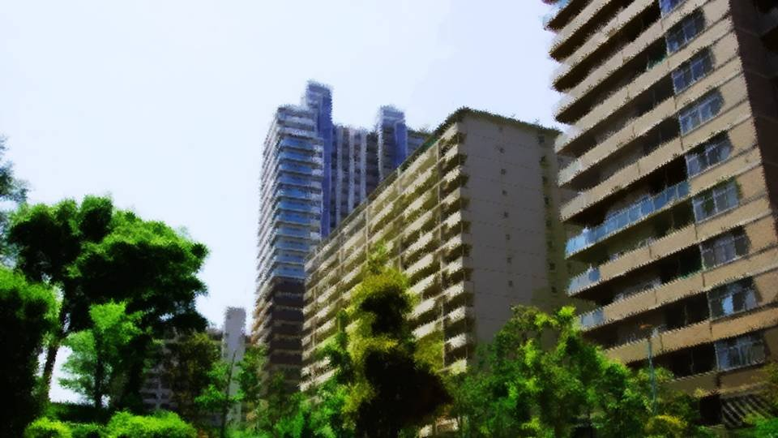
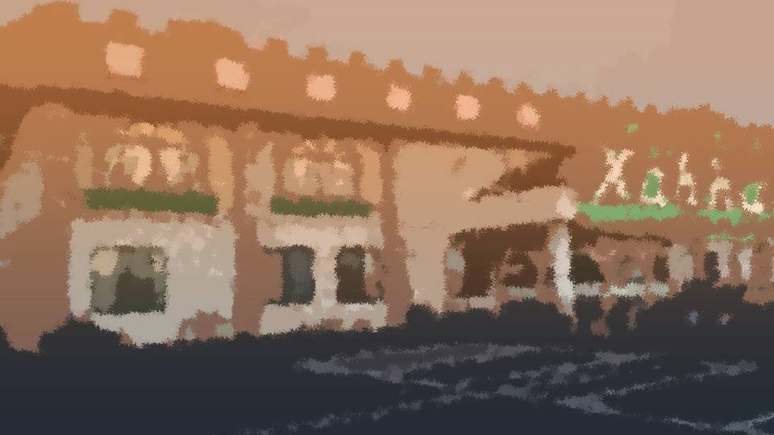

Confusion


"Knew it, Goto's a godsend! A same-day delivery service, what a blessing!"
We left the shops inside the station and went outside.
The sun had begun to shine a little out of the cloudy sky, but there was still no wind.
We left the shops inside the station and went outside.
The sun had begun to shine a little out of the cloudy sky, but there was still no wind.
"But I'm so relieved! Nothing happened to Goto."
"No kidding! Those guys, next time I see them I'm gonna let them have it."
"Now, now..."
"But hey..."
"No kidding! Those guys, next time I see them I'm gonna let them have it."
"Now, now..."
"But hey..."

"Take a look at this view... Motoki-cho didn't used to have this many buildings, did it..."
"But, like Goto said, lots of people move here for the cherry blossoms, right? Isn't it a good thing that Motoki-cho has that kind of appeal?"
"But, like Goto said, lots of people move here for the cherry blossoms, right? Isn't it a good thing that Motoki-cho has that kind of appeal?"
"And Motoki-cho even has an unusual cherry tree called the goshinboku, in Central Park. I don't really get it, but I bet there are people who get enchanted by it."
"Oh, come to think of it, do you know how the goshinboku came to be?"
"Oh, come to think of it, do you know how the goshinboku came to be?"
"Yeah, I heard it suddenly appeared. Wasn't it about 70 years ago?"
"That thing looks hundreds of years old any way you look at it, though. Did it just sprout up all of a sudden..."
"That thing looks hundreds of years old any way you look at it, though. Did it just sprout up all of a sudden..."
"Goto said this a while back, but cherry trees don't grow out of the soil, apparently?"
"Huh? Aren't trees things that grow out of the soil?"
"The thing is, cherries like the Somei-yoshino spread through cuttings or grafting, apparently. So they don't spread unless people lend a hand, she said."
"Huh? Aren't trees things that grow out of the soil?"
"The thing is, cherries like the Somei-yoshino spread through cuttings or grafting, apparently. So they don't spread unless people lend a hand, she said."
"Hmm... So cherry trees are a pretty strange plant, huh.
But... I guess I like it better the way it used to be, after all... Fewer people, the station front not like this, a Motoki-cho full of nature.
It reminds me a little of my dad's family home... No, that's an even more out-of-the-way, middle-of-nowhere place, though."
Haruka's family home was that kind of place, then. This was the first time I'd heard her talk about it.
Haruka's family home was that kind of place, then. This was the first time I'd heard her talk about it.
"Hey, hey, Haruka, what's your family home like? Tell me more!"
Just then, a faint ringtone sounded from inside my bag.
But it cut off right away. It seemed to be a message.
Just then, a faint ringtone sounded from inside my bag.
But it cut off right away. It seemed to be a message.

"Whoa! Oh no!"
Besides the mail, there were lots of incoming calls too.
In all that noise and the crowds, I hadn't noticed at all.
But, the numbers in the call log were all the same, and it was one I didn't know.
Besides the mail, there were lots of incoming calls too.
In all that noise and the crowds, I hadn't noticed at all.
But, the numbers in the call log were all the same, and it was one I didn't know.
"What's wrong, Natsumi?"
"No... lots of calls from a number I don't know..."
"Show me."
I handed the phone to Haruka.
"No... lots of calls from a number I don't know..."
"Show me."
I handed the phone to Haruka.

"This... is from the police. See, the last four digits are 0110."
A call from the police, what on earth...
"Wh-what on earth could've happened!"
Maybe it was just my imagination, but Haruka's voice seemed to be trembling.
A call from the police, what on earth...
"Wh-what on earth could've happened!"
Maybe it was just my imagination, but Haruka's voice seemed to be trembling.
The message was from Mom.
“Please come to the police station right away. Mom is here too.”
"Mom says she's at the police station..."
"Th-the police station!?"
"Yeah, did something happen..."
The police station means... some kind of trouble?
"Mom says she's at the police station..."
"Th-the police station!?"
"Yeah, did something happen..."
The police station means... some kind of trouble?
So many scary things are happening today.
There was the murder in Central Park, I'd had a scary dream at Haruka's house, and Goto had told me that dream was some kind of warning.
A bright-red man warned me in a dream, and now this time Mom is at the police station...?
There was the murder in Central Park, I'd had a scary dream at Haruka's house, and Goto had told me that dream was some kind of warning.
A bright-red man warned me in a dream, and now this time Mom is at the police station...?
A man who even came into my dream to warn me, in the form of a bright-red corpse...
Surely not. Something like that...
Surely not. Something like that...
Dad's away on a business trip to Hokkaido, after all.
Mom passed along word that Dad was worried about the incident, too.
But... that same Mom is at the police station...?
A man who might warn me in a dream...?
Surely that person isn't...
Dad... maybe I should try calling him...
Mom passed along word that Dad was worried about the incident, too.
But... that same Mom is at the police station...?
A man who might warn me in a dream...?
Surely that person isn't...
Dad... maybe I should try calling him...

"Ah, ahhh..."
Just then, Haruka clutched her head and began to shake violently.
"What's wrong, Haruka!? Are you okay!?"
Haruka sank down onto the sidewalk.
Just then, Haruka clutched her head and began to shake violently.
"What's wrong, Haruka!? Are you okay!?"
Haruka sank down onto the sidewalk.
"That's not it...! Natsumi, that's not it...!
I... I...!"
"Haruka, calm down. Come on, deep breath."
It was so sudden that I was bewildered, but I spoke to Haruka and rubbed her back.
"Haruka, calm down. Come on, deep breath."
It was so sudden that I was bewildered, but I spoke to Haruka and rubbed her back.


I had heard about Niimura-senpai's father.
He died 12 years ago, and what caused it was a balloon Kogori-senpai had let fly away.
Those two, best friends, with a past like that...
He died 12 years ago, and what caused it was a balloon Kogori-senpai had let fly away.
Those two, best friends, with a past like that...
Come to think of it, that time―


"Yeah, I lived here in Motoki-cho till kindergarten, but my dad's job had us move.
3 years ago my dad finally got transferred overseas, so it turned into a posting away from the family.
Just me and Mom came back to this town."
That's it! This is what that odd feeling really was!
Kogori-senpai's family: why had they never tried to move away from Motoki-cho, with all its cherry trees?
Even if there are cherry trees all over Japan, there had to be better places than here.
If anything, for Kogori-senpai's springs, a place like Motoki-cho is the worst there is.
Kogori-senpai's family: why had they never tried to move away from Motoki-cho, with all its cherry trees?
Even if there are cherry trees all over Japan, there had to be better places than here.
If anything, for Kogori-senpai's springs, a place like Motoki-cho is the worst there is.
But they didn't move.
Kogori-senpai's father's work, or Kogori-senpai loving Motoki-cho too much: say that, and maybe that's the end of it.
But there still should have been a way.
Kogori-senpai's father's work, or Kogori-senpai loving Motoki-cho too much: say that, and maybe that's the end of it.
But there still should have been a way.
The Niimura family, who left here once, and the Kogori family, who kept on staying.
In other words, the Kogori family had a reason they could not leave this Motoki-cho, with its many cherry trees.
In other words, the Kogori family had a reason they could not leave this Motoki-cho, with its many cherry trees.
But this is nothing more than a way in.
There's something more behind this. Something more... terrifying.
There's something more behind this. Something more... terrifying.
But, one thing has become clear.
The accident 12 years ago, this incident, the bad blood between the Kogori and Niimura families, and Kogori-senpai's dream.
Considering all this, the victim this time can only be that person.
The accident 12 years ago, this incident, the bad blood between the Kogori and Niimura families, and Kogori-senpai's dream.
Considering all this, the victim this time can only be that person.
"Ojisan... this victim, could it be Kogori-senpai's..."
"............"
Ise-san went quiet for a little while, but soon sighed and began to talk.
"............"
Ise-san went quiet for a little while, but soon sighed and began to talk.
"Just what I'd expect from the genius girl. There's not a single mistake in Goto-chan's deduction."
He had said the victim was unidentified, but the police aren't stupid either. They must have quickly identified the victim somehow.
He had said the victim was unidentified, but the police aren't stupid either. They must have quickly identified the victim somehow.
"Aren't you going to tell Kogori-senpai?"
"Kogori-san's mother already knows. But, with the body in that state, we can't confirm the identity yet. So, the mother―Akane Kogori-san, 'Until it's confirmed, please keep it from my daughter,' she said..."
So confirming it from a scientific standpoint still takes time, then.
"Kogori-san's mother already knows. But, with the body in that state, we can't confirm the identity yet. So, the mother―Akane Kogori-san, 'Until it's confirmed, please keep it from my daughter,' she said..."
So confirming it from a scientific standpoint still takes time, then.
Kogori-senpai's dream, if I think it through, would probably mean that her father, having died, stood at her bedside in a dream and warned her of danger.
Warned her of danger...?
Warned her of danger...?

"Wh-what's wrong, Goto-chan?"
Senpai... the danger closing in on her...
Quick, quick, I have to tell Kogori-senpai!
Kogori-senpai... the person beside her is...!
Senpai... the danger closing in on her...
Quick, quick, I have to tell Kogori-senpai!
Kogori-senpai... the person beside her is...!
"Haruka, have you calmed down?"
Haruka's breathing had calmed somewhat, but she still didn't look able to stand.
"N-Natsumi... Natsumi..."
Haruka, still sitting, gripped both my hands tightly.
Haruka's hands were burning so that I couldn't tell if they were hot or cold, and damp with sweat.
I sat down too and brought my eyes level with Haruka's.
Haruka's breathing had calmed somewhat, but she still didn't look able to stand.
"N-Natsumi... Natsumi..."
Haruka, still sitting, gripped both my hands tightly.
Haruka's hands were burning so that I couldn't tell if they were hot or cold, and damp with sweat.
I sat down too and brought my eyes level with Haruka's.

"It's okay, I'm right here."
"Please...! Don't go to the police...! With me... stay with me...!"
"But, Mom is―"
"Please!"
Haruka threw her arms around me, not caring who saw.
"Please...! Don't go to the police...! With me... stay with me...!"
"But, Mom is―"
"Please!"
Haruka threw her arms around me, not caring who saw.
"Haruka... I..."
I'm not going anywhere, I wanted to say, but Mom was at the police station.
I couldn't just leave that alone either.
I'm not going anywhere, I wanted to say, but Mom was at the police station.
I couldn't just leave that alone either.
At the police station, Mom.
Frightened when she heard the police mentioned, starting to make excuses to me, Haruka.
And that dream.
I don't want to imagine it, but the victim this time really is...
Frightened when she heard the police mentioned, starting to make excuses to me, Haruka.
And that dream.
I don't want to imagine it, but the victim this time really is...
So, should I go to the police station, or take Haruka and run?
This is a very important choice.
This is a very important choice.


"Senpai, pick up, quick...!"
"Hello, Senpai!? Um...
Um...!"
"Goto? What's wrong?"
The strangely calm voice of Senpai.
If anything, I'm the one who needs to calm down.
"Goto? What's wrong?"
The strangely calm voice of Senpai.
If anything, I'm the one who needs to calm down.
"Senpai, where are you right now!?"
"At Motoki Station right now. I'm about to get on a train with Haruka."
"With Niimura-senpai, on a train!? You can't! Senpai, please go to the police right away! I'll go too!"
"With Niimura-senpai, on a train!? You can't! Senpai, please go to the police right away! I'll go too!"
"Sorry, Goto... I can't go to the police."
"What are you saying! Senpai, it's dangerous! Niimura-senpai is... Niimura-senpai is...!"
I pleaded desperately, but for some reason it didn't feel like my voice was reaching her.
"Goto, you're kind. Me, I really love you for being like that, Goto. Thanks. I'm sure we'll see each other again."
At first I had thought Senpai's voice was calm, but somehow it also sounded a little sad.
"What are you saying! Senpai, it's dangerous! Niimura-senpai is... Niimura-senpai is...!"
I pleaded desperately, but for some reason it didn't feel like my voice was reaching her.
"Goto, you're kind. Me, I really love you for being like that, Goto. Thanks. I'm sure we'll see each other again."
At first I had thought Senpai's voice was calm, but somehow it also sounded a little sad.
"Then I'll come to where you are too, Senpai!
Wait for me, plea―"
"Sorry, the train's here. I'm hanging up."
"Please wait! The one who died in the incident is Senpai's...!"
The call was cut off.
"Senpai..."
"Sorry, the train's here. I'm hanging up."
"Please wait! The one who died in the incident is Senpai's...!"
The call was cut off.
"Senpai..."
"Senpai, pick up, quick...!"
"Hello, Senpai!? Where are you right now!?"
"What's wrong, Goto? Right now I'm in a taxi with Haruka. We're going to the police station together now..."
"The police station? Thank goodness... But, Niimura-senpai is...!"
"Goto... I know what you want to say. But don't worry. Haruka hasn't done anything."
"What's wrong, Goto? Right now I'm in a taxi with Haruka. We're going to the police station together now..."
"The police station? Thank goodness... But, Niimura-senpai is...!"
"Goto... I know what you want to say. But don't worry. Haruka hasn't done anything."
"Senpai, but...
The one who died in today's incident is―"
"I know that too. That's why I'm going to the police. Together with Haruka."
"So you've figured it all out... About your dad, and about the culprit..."
"About Dad, I figured that's probably how it is. But I don't know about the culprit. Because Haruka―"
"Natsumi!"
Niimura-senpai's yell could be heard faintly from the other end of the phone.
"I know that too. That's why I'm going to the police. Together with Haruka."
"So you've figured it all out... About your dad, and about the culprit..."
"About Dad, I figured that's probably how it is. But I don't know about the culprit. Because Haruka―"
"Natsumi!"
Niimura-senpai's yell could be heard faintly from the other end of the phone.
"Natsumi, I..."
"Well then, Goto. We'll be there soon."
Senpai hung up on me.
I have to get to the police station quickly too...!
"Well then, Goto. We'll be there soon."
Senpai hung up on me.
I have to get to the police station quickly too...!
Read ✓ Next in this arc →